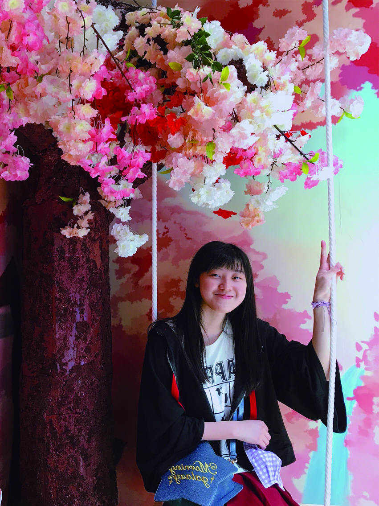
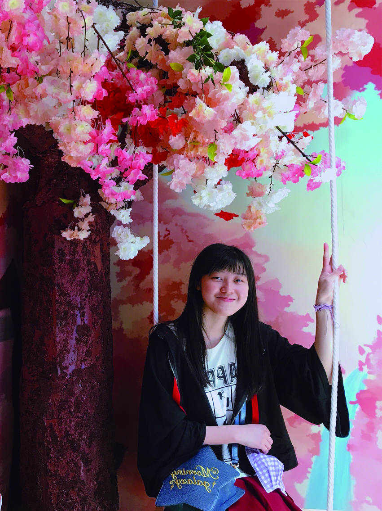

關於我
在此部落格中，將分享我在工作上及生活中的點滴。
|  |
HE,LING-LIN國立臺北教育大學文創系學生 |
我是一名正在就讀文化創意產業經營學系的學生，專注學習 文化研究與文化空間規劃、經營管理與行銷研究， 致力於 跨領域藝術與媒體設計 與 多元發展 的創意探索。
此外，我也熱愛閱讀、鋼筆墨水，希望為創作帶入更多靈感與跨領域的視野。
在此部落格中，將分享我在工作上及生活中的點滴。
|  |
HE,LING-LIN國立臺北教育大學文創系學生 |
我是一名正在就讀文化創意產業經營學系的學生，專注學習 文化研究與文化空間規劃、經營管理與行銷研究， 致力於 跨領域藝術與媒體設計 與 多元發展 的創意探索。
此外，我也熱愛閱讀、鋼筆墨水，希望為創作帶入更多靈感與跨領域的視野。
| Dates | Work |
|---|---|
| 2019-2024 | 酷聖石冰淇淋股份有限公司 |
| 2019-2024 | 時薪制門市娛樂經理 |
| Aseprite | ★★★ |
| Illustrator | ★★★★★ |
| CLIP STUDIO | ★★★ |

正在製作畢業製作 - 靈感有限公司 @mmuse_ltd